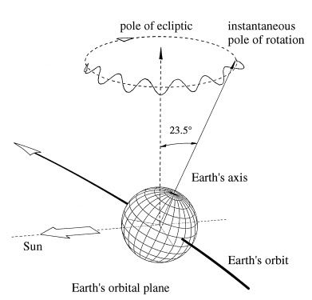
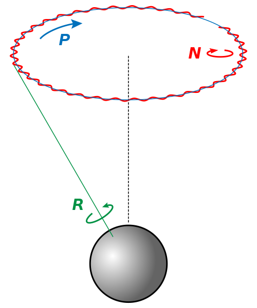
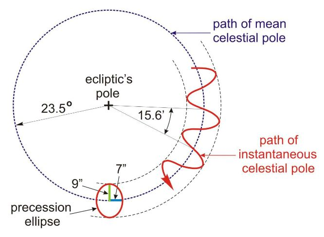
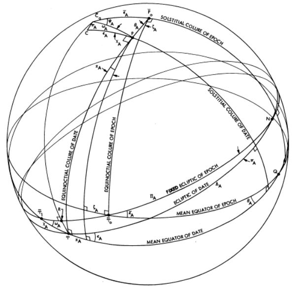
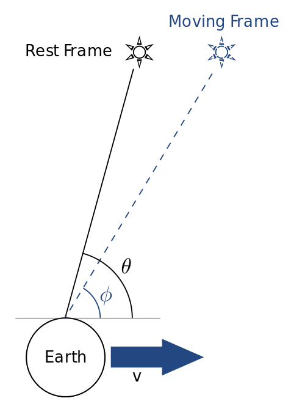
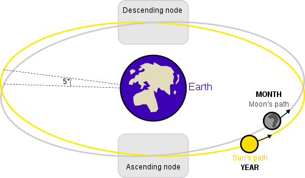
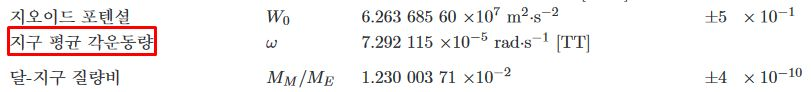
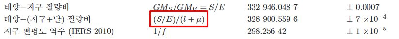
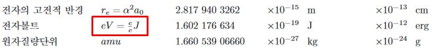

2019년 우주관측 수업에서 2020 역서 09. 천문상수와 자료 설명용으로 작성한 글
국제천문연맹 천문상수
TT, TCG, TCB, TDB
\text{TCG} = \text{TT} + L_G \times (\text{JD} - 2443144.5) \times 86400 \ \text{s}
(\text{TCB}-\text{TCG})_{\text{secular}} = L_C \times (\text{JD} - 2443144.5) \times 86400 \ \text{s}
\text{TDB} = \text{TCB} - L_B \times (\text{JD}_{\text{TCB}} - T_0) \times 86400 \ \text{s} + \text{TDB}_0
\text{TDB}(T_0) - \text{TCB}(T_0) = (\text{TDB} - \text{TCB} \quad \text{at} \quad \text{JD}_{\text{TCB}} = T_0)
SI단위계(International System of Units)의 1 초(second)는 현재 세슘-133 원자의 섭동이 없는 바닥상태의 초미세 전이 주파수 \Delta \nu_{\text{Cs}}를 Hz 단위로 나타날 때 그 수치를 9 192 631 770으로 고정함으로써 정의된다. 여기서 Hz는 s^{-1}과 같다.
TAI(International Atomic Time)는 원자시계에 기반한 시척도이며, BIPM(International Bureau of Weights and Measures)의 분석에 의해 유지되고 있다. TAI의 단위시간 길이는 지오이드에서의 SI초이다.
지구 표면에서 정의된 좌표시간(coordinate time)을 TT(Terrestrial Time)라고 부른다. 지표면에서 이루어지는 천문관측에서의 시간측정에 주로 사용되는 시척도이다. TT의 단위 시간 길이는 TAI의 단위 시간 길이로 정의하며, TAI 1977년 1월 1일 0시 0분 0초를 TT 1977년 1월 1일 0시 0분 32.184초로 정의한다.역사적으로 ET(Ephemeris Time)를 TDT(Terrestrial Dynamic Time)가 계승하고 TDT를 TT가 계승하기에 32.184초가 붙는다.
GCRS(Geocentric Celestial Reference System)는 지구의 질량중심에 원점을 둔 좌표계이며, 지구접근천체(near-Earth object, NEO)에 대한 역학적 계산에서 사용되는 좌표계이다. GCRS의 시간을 TCG(Geocentric Coordinate Time)라고 부른다. TCG는 중력에 의한 시간 지연 효과를 모두 무시하였을 때, 지구의 질량중심과 같이 움직이는 좌표계의 고유시간(proper time)이다.
BCRS(Barycentric Celestial Reference System)는 태양계의 질량중심에 원점을 둔 좌표계이며, 일반적인 천체에 대한 역학적 계산에서 사용되는 좌표계이다. BCRS의 시간을 TCB(Barycentric Coordinate Time)라고 부른다. TCB는 중력에 의한 시간 지연 효과를 모두 무시하였을때,태양계의 질량중심과 같이 움직이는 좌표계의 고유시간(proper time)이다.
TDB(Barycentric Dynamical Time)는 2006년 이후로 TCB를 사용하여 정의된다.
각 시스템 시간의 단위 시간 길이는 상대론적 효과에 의해 미세하게 다르다.각각의 단위 시간 길이를 \rm{d}(\text{TT}), \rm{d}(\text{TCG}), \rm{d}(\text{TCB}), \rm{d}(\text{TDB}) 처럼 나타낸다.
지구자전각(ERA)
지구자전각(ERA, Earth Rotation Angle)는 항성시(Sidereal time)와 비슷한 개념으로, 지구가 자전에 의해 돌아간 각도를 나타낸다. rev는 revolutions(회전)의 줄임말이다.
1 \text{ rev} = 1 \text{ 회전} = 360^\circ
태양질량인수(태양중력상수), 지구중력상수
GM의 경우 천문관측에 의해 측정이 가능하나, G는 매우 정밀한 실험에 의해서만 측정이 가능하다. 따라서 GM의 정확도가 G, M보다 높은 경우가 많으므로 천문상수에 GM 값을 명시한 것이다.
지구적도반경
SI m(미터)는 SI s(초)에 기반하여 정의되므로, m 단위의 상수에도 시척도 [\text{TT}]를 밝힌 것이다. a_E = a_e
지구역학계수, 지구역학계수 시간변화율
지구를 꽉찬 회전타원면(spheroid)형태의 질량체라고 가정하자. 원점이 지구의 질량중심에 위치하고, 지구의 회전이 관측되지 않는 구면좌표계(spherical coordinate system)에서의 지구 중력 포텐셜(potential) \phi는 지구 중력상수 \mu = GM_E에 대해 다음과 같이 주어진다. \phi = - \frac{\mu}{r} + \sum_{n=2}^{\infty} \frac{J_n P_n(\sin \theta)}{r^{n+1}}
여기서 P_n은 르장드르 다항식(Legendre polynomial)으로, 로드리게스공식(Rodrigues’ formula)은 다음과 같다. P_n(x) = \frac{1}{2^n n!} \frac{d^n}{dx^n} (x^2 - 1)^n
\phi에서 첫항을 제외한 지배항(dominating term)은 n=2인 J_2 term으로, n \geq 3 항들은 일반적으로 무시가능하다. J_2 항은 다음과 같이 주어진다.
\phi_{J_2 \ \text{term}} = \frac{J_2 P_2(\sin \theta)}{r^3} = J_2 \frac{3 \sin^2 \theta - 1}{2r^3}
여기서 J_2 항의 계수가 J_2이며, 지구역학계수(Dynamical form-factor for the Earth)라고 부른다. 지구역학계수 시간변화율에서 cy는 century(1세기, 100년)의 줄임말이다.
J_2의 값은 다음과 같이 계산할 수 있다.
J_2 = \frac{2}{3}f - \frac{a^3 \omega^2}{3GM_E}
여기서 f는 지구 편평도, a는 지구 적도반경, \omega는 지구 평균 각속도, GM_E는 지구 중력상수이다.
지오이드 포텐셜
중력장(gravitational field) \mathbf{g}에 대해 \mathbf{g} = - \nabla \phi를 만족시키는 스칼라장(scalar field) \phi를 중력 포텐셜(potential)이라고 부른다.
지구 중력장의 등퍼텐셜면(equipotential surface)을 지오이드(geoid)라고 부른다. 그러므로 정의에 의해 지오이드는 중력에 수직이다. 또한 지오이드는 무수히 많으며, 각각에 대응되는 지오이드 포텐셜도 무수히 많다. 다만 관습적으로 특정한 등포텐셜면(바다에서는 평균 해수면, 육지에서는 평균 해수면을 연장한 곡면)을 지오이드라고 부른다. 지오이드 포텐셜 W_0는 현재 다음과 같이 정의된다. W_0 = c^2 L_G
지구 편평도 역수 (IERS 2010)
지구는 자전에 의해 적도반경이 극반경보다 길다. 따라서 지구의 단면을 장반경이 a, 단반경이 b인 타원으로 근사 가능하다. 이때 지구 편평도(flattening) f는 다음과 같이 정의된다 f = \frac{a-b}{a}
IERS는 International Earth Rotation and Reference Systems Service의 약자이다.
일반 경도세차, 경사각 변화율, 경도 적도세차, 경사각 적도세차, 장동상수


관성좌표계(inertial frame of reference)에서 관측한 지구는 위의 그림 처럼 자전(Rotation), 세차(Precession), 장동(Nutation)을 한다. 자전은 지구의 적도 평면과 수직한 직선 상에 존재하면서 지구의 북극 근방에 있는 관측자가 지구를 바라보았을 때 지구 전체가 반시계 방향으로 회전하는 현상이다. 자전 주기는 1일이다. 세차는 지구의 황도평면과 수직한 직선 상에 존재하면서 지구의 북극 근방에 있는 관측자가 지구를 바라보았을 때 지구의 자전축이 시계 방향으로 회전하는 현상이다. 세차 주기는 약 26000년이다. 장동은 지구의 황도평면과 수직한 직선 상에 존재하면서 지구의 북극 근방에 있는 관측자가 지구를 바라보았을 때 지구의 자전축과 지구의 공전축 사이의 각도가 주기적으로 변하는 현상이다. 장동 주기는 약 18.61년이다.
그리스의 히파르코스(Hipparchus of Nicaea)가 춘분점이 이동한다는 현상을 BC 127년에 발견함으로써 지구의 세차운동이 알려졌기 때문에, 역사적으로 지구의 세차운동은 분점의 세차운동(precession of the equinoxes)이라고 불렸다. 그러나 뉴턴 이후 천체역학이 발달하면서 세차운동이 태양, 달, 지구 외 행성들이 지구에 작용하는 중력에 의해 발생한다는 사실을 알게 되면서 새로운 용어가 만들어졌다. 주로 태양과 달에 의해 지구의 적도 평면이 변하는 현상을 일월 세차(Lunisolar precession), 주로 지구 외 행성에 의해 지구의 황도 평면이 변하는 현상을 행성 세차(Planetary precession)라고 명명했으며, 이 둘의 결합으로 발생하는 실제 세차운동을 일반 세차(General Precession)라고 명명했다. 그러나 태양과 달이 지구의 황도평면을 변화시키기도 하고, 지구 외 행성이 지구의 적도평면을 변화시키기도 하기에, 용어에 있어 혼선이 존재한다는 판단 하에 2006년 IAU가 각각의 용어를 재정의했다. 즉 일월세차(Lunisolar precession)를 적도 세차(Precession of the equator)로, 행성 세차(Planetary precession)를 황도 세차(Precession of the ecliptic)로 용어를 바꾸었다.

위 그림은 지구의 황도평면과 수직한 직선 상에 존재하면서 지구의 북극 근방에 있는 관측자가 지구를 바라보았을 때 천구의 북극(지구 자전축의 끝부분)이 이동하는 경로를 나타낸 것이다. 점선의 운동경로(path of mean celestial pole)는 세차운동에 의한 경로이고, 실선의 운동경로(path of instantaneous celestial pole)는 세차운동에 의한 원운동에 장동운동에 의한 타원운동이 결합된 운동에 의한 경로이다. 천구의 북극이 점선의 운동경로를 따라 이동하는 각속력을 일반 경도세차(General precession in longitude) p_A라고 한다. 장동운동에 의해 천구의 북극은 국소적인 타원운동을 하게 되는데, 이 타원의 장반경(semi-major axis)을 장동장수(constant of nutation) N이라 한다.

Equinoctial colure는 천구의 북극(Celestial North Pole), 천구의 남극(Celestial South Pole), 춘분점(Vernal Equinox), 추분점(Autumnal Equinox)을 지나는 대원이다. Solstitial colure는 천구의 북극(Celestial North Pole), 천구의 남극(Celestial South Pole), 하지점(Summer Solstice), 동지점(Winter Solstice)을 지나는 대원이다.
어느 시점에서의 \epsilon_A는 그 시점에서의 황도(ecliptic of date)와 그 시점에서의 평균 적도(mean equator of date)가 이루는 각도이다. 어느 시점에서의 \psi_A는 그 시점에서의 solstital colure(solstital colure of date)와 역기점에서의 solstital colure(solstitial colure of epoch)가 이루는 각도이다. 어느 시점에서의 \omega_A는 그 시점에서의 평균적도(mean equator of date)와 역기점에서의 고정된 황도(fixed ecliptic of epoch)가 이루는 각도이다. P03 precession model에 의해 주어지는 각각의 값을 t에 대한 2차항 까지만 나타내면 다음과 같다.
\epsilon_A = 84381''.406 - 46''.836769t - 0''.0001831t^2
\psi_A = 5038''.481507t - 1''.0790069t^2
\omega_A = 84381''.406 - 0''.025754t + 0''.0512623t^2
여기서 t = (\text{TT} - \text{2000 January 1d 12h TT})/36525 (값은 day단위로 넣는다)는 J2000.0 TT 로부터 경과된 시간을 Julian century 단위로 나타낸 값이다.
J2000.0 경사각 변화율(Rate of change in obliquity) \dot{\epsilon}는 \epsilon_A를 t에 대해 미분하고 t=0을 대입한 값으로, J2000.0에서의 \epsilon_A의 시간 변화율을 나타낸다.
J2000.0 경도 적도세차(Precession of the equator in longitude) \dot{\psi}는 \psi_A를 t에 대해 미분하고 t=0을 대입한 값으로, J2000.0에서의 \psi_A의 시간 변화율을 나타낸다.
J2000.0 경사각 적도세차(Precession of the equator in obliquity) \dot{\omega}는 \omega_A를 t에 대해 미분하고 t=0을 대입한 값으로, J2000.0에서의 \omega_A의 시간 변화율을 나타낸다.
태양 시차
태양에서 본 지구의 시반경(apparent radius, angular radius)을 태양 시차(solar parallax)라고 부른다.
광행차 상수

광행차(aberration)란 관측자의 속도에 의존하여 관측대상의 겉보기 위치가 바뀌는 현상이다. 관측자가 v의 속력으로 움직인다고 하자. 관측자가 움직이는 방향을 각도를 측정하는 기준선으로 설정하고, 관측자가 정지했을 때 특정 관측 대상에 대한 시선방향과 기준선이 이루는 각을 \theta, 관측자가 움직일 때 특정 관측 대상에 대한 시선방향과 기준선이 이루는 각을 \phi라고 하자. 그러면 v/c \ll 1일 때 다음이 성립한다.
\kappa = \theta - \phi \approx v/c
v가 지구의 평균 공전 속도일때의 \kappa를 광행차 상수(constant of aberration)라고 부른다.
일반 천문상수
표면중력, 태양상수, 표면탈출속도, 표면유효온도, 전복사에너지, 표면복사에너지
질량이 M인 천체의 반지름이 R이라면 표면중력은 다음과 같이 구할 수 있다.
\text{표면중력} = \frac{GM}{R^2}
태양으로부터 1 \text{ au}만큼 떨어진 단위면적에 단위시간동안 통과하는 총 태양에너지를 태양상수라고한다. 즉, r=1 \text{ au}, L = \text{광도} 일때 다음을 얻는다.
\text{태양상수} = \frac{L}{4 \pi r^2}
질량이 M인 천체의 반지름이 R이라면 표면탈출속도는 다음과 같이 구할 수 있다. \text{표면탈출속도} = \sqrt{\frac{2GM}{R}}
천체를 그 천체와 같은 광도를 가진 흑체로 가정했을 때 흑체가 가지는 열평형온도를 표면유효온도라고 한다. \text{표면유효온도} = T_e = \left( \frac{F_R}{\sigma} \right)^{1/4}
천체가 단위 시간 동안 방출하는 총에너지를 전복사에너지(또는 광도)라고 한다. \text{전복사에너지} = L = \text{광도}
천체의 단위 표면적이 단위 시간 동안 방출하는 총에너지를 표면복사에너지라고 한다. \text{표면복사에너지} = F_R = \frac{L}{4 \pi R^2}
이심률
닫힌 공전 궤도는 타원 궤도이고, 타원의 장반경 a, 단반경 b에 대해 궤도의 이심률(eccentricity) e는 다음과 같이 계산된다. e = \frac{\sqrt{a^2 - b^2}}{a}
적도 수평 시차
적도상의 한 관측자 천정에 천체가 위치한다고 하자. 그 관측자로부터 적도를 따라 90^\circ만큼 떨어져 있는 관측자가 같은 천체를 바라본다고 하자. 이때 두 관측자의 시선방향이 이루는 각을 적도 수평 시차(equatorial horizontal parallax)라고 한다.
따라서 달의 적도 수평 시차 \pi는 지구 적도 반경 R, 지구 중심에서 달까지의 거리 r에 대해 다음과 같이 주어진다.
\pi = \arcsin \left( \frac{R}{r} \right)
장동주기 (교점주기)

천체의 공전궤도가 어떤 기준평면과 만나는 2개의 점을 통틀어서 궤도 교점(orbital node)이라고 하며, 기준평면의 어느 한쪽을 위쪽으로 정의하였을 때, 천체가 아래에서 위로 올라오는 교점을 승교점(ascending node), 위에서 아래로 내려가는 교점을 강교점(descending node)이라고 한다.
기준평면을 황도평면으로 하였을때, 달의 공전궤도에 대한 궤도교점을 달의 교점(Lunar node)이라고 한다. 지구의 장동 운동을 발생시키는 주 원인이 달이기 때문에, 이에 대한 반작용으로 달의 교점이 변하게 된다. 달의 교점이 황도를 따라 한바퀴 회전하는데 걸리는 시간은 지구의 장동 운동주기와 같은 약18.61년이다. 따라서 이것을 장동주기(nodal period) 또는 교점주기(draconic period)라고 한다.
사로스 주기
사로스주기(saros)는 태양, 달, 지구의 상대적 위치 관계가 반복되는 주기로, 정확히 223 삭망월(synodic month)이다.
오오트 상수
은하면(galactic midplane)에 존재하는, 은경(galactic longitude)이 \ell인 임의의 천체가 태양으로부터 떨어진 거리가 d라고 하자. 그러면 태양에 대한 그 천체의 상대속도의 시선방향 성분(radial component)과 접선 방향 성분(tangential component)은 다음과 같이 주어진다.
v_r \approx Ad\sin(2\ell)
v_t \approx Ad\sin(2\ell) + Bd
여기서 A, B가 오오트 상수(Oort constant)이다.
정오표
지구 평균 각운동량

\text{지구 평균 각운동량} \rightarrow \text{지구 평균 각속도}
지구 평균 각속도는 지구의 평균 자전 각속도이다.
태양-(지구+달) 질량비
 (S/E)(l+\mu) \rightarrow (S/E)(1+\mu)
\because \frac{S}{E+M_M} = \frac{S}{E+\mu E} = \frac{S}{E}\frac{1}{1+\mu} = (S/E)(1+\mu)
전자볼트
 eV = \frac{e}{c} J \rightarrow \text{eV} = (e/\text{C}) \text{ J}
여기서 \text{J}는 에너지의 단위 줄(joule)이고, (e/\text{C})는 쿨롬(coulomb) 단위로 나타낸 기본 전하(elementary charge)의 값이다.
참고문헌
CAPITAINE, Nicole; WALLACE, Patrick T.; CHAPRONT, Jean. Expressions for IAU 2000 precession quantities. Astronomy & Astrophysics, 2003, 412.2: 567-586.
CARROLL, Bradley W.; OSTLIE, Dale A. An introduction to modern astrophysics. Cambridge University Press, 2017.
LIESKE, J.H., et al. Expressions for the precession quantities based upon the IAU/1976/system of astronomical constants. Astronomy and Astrophysics, 1977, 58: 1-16.
MCCARTHY, Dennis D.; SEIDELMANN, P.Kenneth. Time: from Earth rotation to atomic physics. Cambridge University Press, 2018.
VÖLGYESI, L. Physical backgrounds of Earth’s rotation, revision of the terminology. Acta Geodaetica et Geophysica Hungarica, 2006, 41.1: 31-44.
BIPM - Time, https://www.bipm.org/en/bipm/tai/
FIG Article of the Month - December 2004, https://www.fig.net/resources/monthly_articles/2004/beutLer_july_2004.asp
File:Lunar eclipse diagram-en.svg - Wikimedia Commons, https://commons.wikimedia.org/wiki/File:Lunar_eclipse_diagram-en.svg
{kind=link}
File:Praezession.svg - Wikimedia Commons, https://commons.wikimedia.org/wiki/File:Praezession.svg#mw-jump-to-license
{kind=link}
File:Simple stellar aberration diagram.svg - Wikimedia Commons, https://commons.wikimedia.org/wiki/File:Simple_stellar_aberration_diagram.svg
{kind=link}
Fundamental Physical Constants from NIST, https://pml.nist.gov/cuu/Constants/
Reference Earth Model - WGS84, https://topex.ucsd.edu/geodynamics/14gravity1_2.pdf
The Astronomical Almanac Online, http://asa.hmnao.com/index.html
기본단위의 정의, https://www.kriss.re.kr/standard/view.do?pg=explanation_tab_02